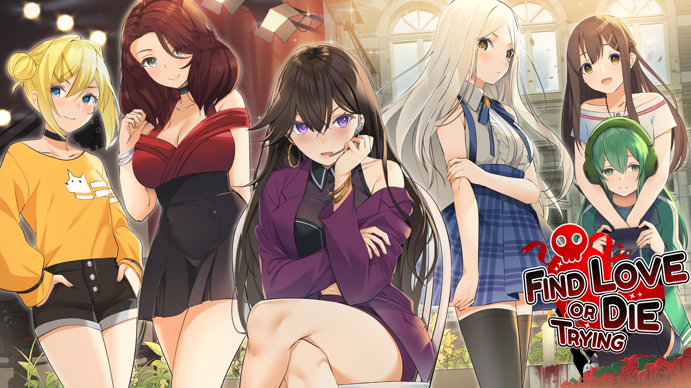

galgame分享
《Teaching Feeling ～和瘢痕少女在一起的生活～》

《Teaching Feeling ～和瘢痕少女在一起的生活～》的感想
领域展开
游戏简介
某日突然，你认领下了一位长期受到虐待的奴隶少女。
虽然最开始的时候只有像无机物一样的反应，但是在逐渐加深交流的过程中，她逐渐打开了心扉。
不仅能进行亲密接触，也能带去各种地方，还能送给她各种衣服来进行换装。
换装系统有着相当高的自由度，同时换装也会反映到主要的H场景中。
随着时间的经过，少女也会逐渐向你展示她的好意，变得可以和她做一些H的事情。
如果反复操作特殊的H模式来提高她的敏感度让她逐渐习惯H的话，她也会变得积极起来，开始同你进行一些H的事情。
反复进行各种H剧情，会让她的属性和状态发生变化，与此同时，H剧情的种类和内容也会发生一定变化。
H场景中带有可个别切换的断面图和漫画表现以及手写的台词和拟音。
Find Love or Die Trying / 寻爱或赴死
《Find Love or Die Trying / 寻爱或赴死》的感想
领域展开
游戏简介
我是你们的主持人Kat，这里是Find Love or Die Trying！
这是我们新的约会节目的首演，在这里，单身就意味着被杀! 不知道你为什么要报名参加这个节目，但既然你来了，你有7天时间让你热带岛屿度假的可爱女士们中的一位爱上你。如果她愿意戴上戒指，你们俩就可以离开了。如果不愿意......好吧，这是节目的名字！你将有机会与她见面。
你将有机会见到。
- Allie，具有反叛精神的敢死队运动员
- Scarlett，有破坏癖好的迷人科学家
- Violet，神秘的MegaCorp的冰冷子孙
- Terra，古怪的游戏者，按自己的想法行事
- Yui，有着可以融化冰块的笑容的青梅竹马
总之....
我迫不及待地开始拍摄我们一起的第一集!
特点
- 4个多小时的视觉小说游戏，有分支选择和后果
- 8个独特的结局
- 原创故事、艺术和音乐
- 扮演任何性别